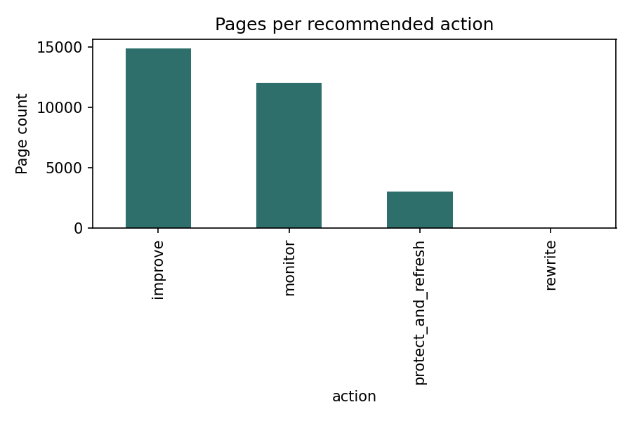

Abstract
Content teams managing large page inventories have no systematic way to see which pages behave alike, relying instead on gut feel and single-metric sorts. This study used K-Means clustering on 30,000 structured content records — 90-day traffic, engagement, and freshness metrics, with no article text — to test whether recurring behavioral archetypes exist beyond a hand-written priority rule. Clustering found real but partial structure: a small, high-value "champion" cluster and a near-invisible "weak-demand" cluster stood out clearly, while the remaining two clusters were driven substantially by content type rather than independent behavior. A grouped-by-client validation split showed the result was not simply client memorization (holdout silhouette 0.278 vs. 0.294 on a random split), and a deliberate leakage test confirmed the audit process was genuinely sensitive to contamination. The output is a ranked, reason-coded action queue intended for human review — decision-support, not an automated recommendation engine, and not a claim about causation or future performance.
Introduction
A content strategist facing a backlog of thousands of pages needs to answer one question every sprint: where should limited editor time go first? Single-metric sorts — "top 10 by traffic" — miss interaction effects: a low-traffic page can be a hidden gem if engagement is high, or genuinely dead weight if it isn't. A wrong call is not free. Pruning a quietly-working page wastes rebuild cost later; leaving a declining page alone because it still looks strong on one metric compounds lost traffic; rewriting a page that's actually competing with a sibling page wastes hours on the wrong fix.
This study asks whether unsupervised clustering — grouping pages by structural similarity, not by a predicted outcome — can add resolution beyond what a transparent, hand-written rule already provides, and states plainly where that added resolution is genuine versus where it is closer to rediscovering known content categories.
Data
Source: the FlyRank ML Internship starter release — 30,000 pseudonymized content pages across 32 clients, trailing-90-day Google Search Console and GA4-derived metrics. No client names, raw URLs, or private queries appear anywhere in this dataset; all identifiers are pseudonyms by design.
| Field | Role | Why |
|---|---|---|
| content_id, client_id | Context | Grouping and splitting only, never a feature |
| trend_direction, trend_pct | Excluded as feature | Derived the same way a label would be — using it risks circularity |
| provider_used, model_used | Excluded | Production metadata, not audience-behavior signal |
| 15 structured metrics + 4 missingness flags | Feature | Safe, structured, knowable at analysis time |
Methodology
Task framing
Clustering, not classification: no observed future outcome exists in this snapshot to predict, so the honest task is "what kinds of pages exist," evaluated by silhouette score plus a human sense-check of whether cluster profiles match recognizable archetypes.
Baseline
A transparent, readable rule assigns every page one reason code (stale_declining_visible, declining_visible_fresh, stale_visible_stable, low_priority), scored as declining × visible × (1 + stale) × impressions_90d — no fitted weights, fully human-auditable.
Validation design
Split grouped by client_id, not random. Client size is highly skewed (largest client holds 23% of all rows), so a random split lets the model implicitly memorize a client's own scale. A seed-sensitivity check across five seeds confirmed this matters: the resulting split ratio swung from 66/34 to 93/7 despite requesting 80/20 every time, purely from which large client landed in holdout.
Leakage audit
Full checklist run against the final 19-field feature set: no label-derived fields, no product-decision flags, no identifier columns, zero client overlap between fit and holdout. A deliberate-injection test — adding trend_pct, a field known to be derived the same way as the excluded label — raised holdout silhouette from 0.278 to 0.293, confirming the audit harness genuinely detects leakage rather than passing by default.
Results

Pages per recommended action, from the final ranked queue. monitor and improve hold the bulk of the portfolio; the small rewrite bucket (13 pages) is the highest-confidence, highest-urgency group — visible, declining, and stale for 180+ days.
| Metric | Baseline (4 hand-written buckets) | K-Means (k=4) |
|---|---|---|
| Groups found | 4 | 4 |
| Resolution inside baseline's largest bucket (21,085 rows) | 1 undifferentiated bucket | Split across all 4 clusters |
| Validated metric | None (rule-based) | Silhouette = 0.278 (holdout) |
Limitations
- No article text. Clustering is behavioral, not semantic — archetype names describe traffic and engagement shape, not topic or meaning.
- Content-type confound. The strongest cluster-driving feature is a near-proxy for content type, not a purely new behavioral signal.
- No validated future outcome. The baseline's "declining" label is a defined rule, not an independently observed result — no precision@K against a real future window exists in this snapshot.
- Client concentration. One client holds 23% of rows; the priority queue's top candidates are disproportionately drawn from a small number of large clients.
- Small grouped holdout. Only 7 of 32 clients fall in the validation holdout; one unusual client could swing the reported silhouette.
- Cross-sectional data, one snapshot. No causal claims are supported anywhere in this work — only observed, directional, decision-support structure.
Ranked recommendations
The output of this work is a reason-coded action queue for human review, not an automated system:
- 01Protect and refresh champions first. The highest-value pages are often also the most neglected relative to their value — losing one costs the most.
- 02Rewrite the small, high-confidence stale-and-declining group. Still visible, losing ground, untouched 180+ days — the clearest actionable signal in the queue.
- 03Improve the larger declining-but-fresh group. A page that's still declining despite a recent update needs investigation, not an assumed rewrite.
- 04Monitor the rest. Includes weak-demand pages where average position is statistically unreliable due to a tiny impression base — do not prune on position alone.
Reproducibility
All notebooks live in this repository under work/notebooks/. The exported action queue, review sample, and monitoring baseline are in work/outputs/. Random seeds are fixed and stated in each notebook; rerunning top-to-bottom reproduces every table and figure on this page.
Acknowledgments & data credit
Built on the FlyRank ML Internship dataset. Data credit and program information: flyrank.ai.